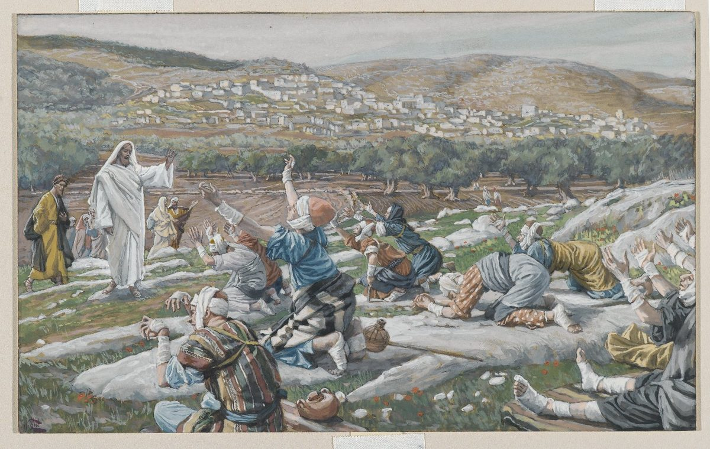

Levítico 13 — La Traducción Mister

No es la propia escena de este capítulo —Levítico 13 no tiene ninguna, solo ley—, sino la gente a quien gobernaba esta ley, pintada en el momento en que su autoridad sobre ellos se levanta. Los diez de Tissot se arrodillan sobre roca desnuda con las manos, los pies y las espinillas envueltos en tela blanca, la marca visible de la misma afección que cincuenta y nueve versículos de este capítulo existen para diagnosticar; Cristo permanece aparte de ellos, a la distancia que exige el propio v46 de este capítulo, con ambas manos alzadas en vez de extendidas para tocar, ya que en el relato de Lucas (17:11-19, todavía no en estas páginas) los diez son sanados a distancia, con una palabra, y solo uno —un samaritano— regresa antes de llegar al sacerdote. ⚠ La figura de manto dorado que se aleja en el borde izquierdo es probablemente uno de los nueve, ya de camino a «mostrarse al sacerdote» tal como exige esta ley y Levítico 14 (ya en estas páginas) —la obediencia a Levítico 13 pintada como un hombre que sale del cuadro.
_-_James_Tissot_-_overall.jpg){kind=link}
Nega y tzaraat — la marca, y la enfermedad en que podría convertirse
Como en Levítico 11 (ya en estas páginas), esta ley se dirige a Moisés Y a Aarón juntos —uno de los pocos capítulos que nombran a Aarón como destinatario directo, y cada vez por la misma razón: el sacerdocio tiene que ejecutar esto personalmente, no solo recibirlo de segunda mano. Levítico 12, un capítulo antes, se dirigió solo a Moisés aunque también es un sacerdote quien realiza su ritual; la diferencia es el diagnóstico. Una ofrenda de parto sigue un guión fijo. Una afección de la piel no —el sacerdote tiene que mirar, y decidir, cada vez, que es exactamente lo que entrenan los siguientes cincuenta y ocho versículos.
El capítulo abre con tres marcas con nombre propio y una palabra para lo que cualquiera de ellas PODRÍA ser. Una se’et («una hinchazón», de una raíz que significa levantarse), una sapachat («una costra»), o una baheret («una mancha blanca») se vuelve una afección —un nega, todavía no un diagnóstico— de enfermedad escamosa solo si el examen del sacerdote lo confirma. Mantener separadas las dos palabras hebreas importa, porque todo el procedimiento del capítulo depende de esa distancia: una marca todavía no es una enfermedad, y todo el sentido de esta ley es que solo un examen entrenado y repetido tiene autoridad para cerrar esa distancia.
⚠ Y eso nos lleva a la palabra que casi todas las Biblias en español han usado durante siglos, y que está equivocada: «lepra». Hacia el siglo II a.C., los traductores de la Septuaginta vertieron tzaraat con el griego lepros, y fue una elección razonable para su época —lepros simplemente significaba «escamoso» en el griego de entonces, y la verdadera enfermedad de Hansen (Mycobacterium leprae) tenía un nombre griego totalmente distinto, elefantíasis; la medicina antigua mantenía las dos separadas. El estrechamiento ocurrió siglos después, cuando «lepra» se endureció hasta nombrar una sola enfermedad temida y ninguna otra —así que un lector actual se encuentra con la palabra tradicional e importa, sin darse cuenta, un diagnóstico que el hebreo nunca hace. Esta traducción usa «enfermedad escamosa» en todo el capítulo en su lugar. RV60 conserva «llaga de lepra»; NVI se aparta del todo de «lepra» en su propio texto principal, con «infección», dejando la palabra tradicional en una nota al pie; y ⚠ incluso TNM, normalmente el testigo más exacto de este estante precisamente en este tipo de cuestión, conserva aquí «la enfermedad de la lepra» —uno de los pocos lugares donde su propia precisión no vence a la tradición que suele corregir.
Enfermedad escamosa antigua —y la regla de que volverse blanco por completo te vuelve PURO
Este caso no necesita espera de siete días: una enfermedad que ya ha vuelto blanco el pelo y muestra carne viva debajo se diagnostica a la vista, de una vez, sin reclusión. El capítulo trata «carne viva y expuesta en la hinchazón» como algo decisivo precisamente porque es la única señal que no puede confundirse con una cicatriz antigua o una erupción pasajera —tejido vivo expuesto dentro de la marca. ⚠ Ese detalle resulta ser la clave de la regla más extraña de todo el capítulo, tres versículos después.
El v13 es la paradoja que detiene a la mayoría de los lectores primerizos: si la enfermedad se ha propagado hasta cubrir TODO el cuerpo, de la cabeza a los pies, el hombre es declarado puro. Más enfermedad, no menos, es lo que lo limpia. Leído junto a los vv10–11 deja de ser extraño: lo que el capítulo realmente rastrea nunca es la BLANCURA en sí misma, sino si hay carne viva y expuesta en algún punto. Una enfermedad que ha completado su curso y lo ha cubierto todo, sin nada vivo expuesto en ninguna parte, no tiene —según la propia lógica de esta ley— nada que propagar; una enfermedad que aún avanza sobre territorio nuevo, visible como carne viva en su frente de avance, es la que sigue activa. El v14 lo confirma sin rodeos: en el instante en que reaparece carne viva, incluso en un cuerpo ya declarado puro por estar todo blanco, vuelve a ser impuro. El color nunca fue el criterio real. Siempre fue la carne viva, y la blancura solo era una señal indirecta de su ausencia.
Dos cicatrices accidentales, examinadas por el mismo procedimiento
Una úlcera sanada (vv18–23) y una quemadura sanada (vv24–28) reciben cada una su propio párrafo masorético, y luego el mismo procedimiento de siete versículos, casi palabra por palabra, aplicado a cada una. La úlcera es la misma palabra que usa Éxodo para la sexta plaga de Egipto —una llaga corriente, cotidiana, sin nada sobrenatural en padecerla. Lo que ambos casos comparten es la pregunta real que responde la ley: ya ha ocurrido un accidente en esta piel, ¿cómo distingue el sacerdote una CICATRIZ inocente de una enfermedad genuinamente nueva que usa la vieja herida como su punto de entrada? La respuesta, ambas veces, es la misma: las tres pruebas ya establecidas —pelo blanco, profundidad bajo la piel, propagación— aplicadas ahora a una marca que tiene, justo al lado, una explicación conocida e inofensiva.
⚠ Notése lo que el sacerdote nunca hace en ninguno de los dos casos, ni en ningún lugar de este capítulo: no trata, no medica, no punza, no receta. El verbo que sostiene todo el capítulo es ra’ah, «mirar» —aparece unas treinta veces en cincuenta y nueve versículos—, y todo acto diagnóstico termina en un veredicto hablado, tame o tahor, impuro o puro, nunca en una cura. Este es un capítulo sobre EXAMEN y ESTATUS, no sobre terapia; lo que hace que la enfermedad desaparezca de verdad ocurre fuera de la página, y todo el trabajo del sacerdote es seguir pronunciándose sobre ella, vez tras vez, hasta que lo hace.
Netek —la escama, donde la señal es el pelo amarillo, no el blanco
El cuero cabelludo y la barba reciben su propio subtipo con nombre, y su propia señal diagnóstica: no pelo blanco, sino pelo que se ha vuelto fino y amarillo. Netek es el hebreo, y esta traducción lee «una escama». Algunos dermatólogos han propuesto el favus, una infección fúngica del cuero cabelludo que produce exactamente ese pelo fino y descolorido, aunque nada en el texto permite comprobar esa identificación contra un caso real.
⚠ Y el v30 deja explícita, en un mismo aliento, la relación entre las dos palabras hebreas: «es una escama —es enfermedad escamosa de la cabeza o de la barba». Netek no es una categoría rival de tzaraat; se nombra como una forma de ella, con su propia regla local porque el pelo, no la piel, es lo que un sacerdote puede ver con claridad en un cuero cabelludo. El procedimiento de reclusión de siete-más-siete se repite aquí casi versículo por versículo —este capítulo está menos interesado en enumerar enfermedades nuevas que en mostrar que un solo método, repetido con paciencia, las cubre todas.
Bohaq —una palabra hapax, y el cuidado de la ley por no sobrediagnosticar
Dos versículos, y un diagnóstico que no necesita reclusión alguna: una erupción blanca desvaída se declara pura a la vista. Bohaq aparece exactamente una vez en toda la Biblia hebrea, aquí, así que no hay una segunda ocurrencia en toda la Escritura contra la cual comprobar su significado —se imprime sin traducir en esta edición en lugar de adivinarse, siguiendo la propia regla de este proyecto para un hapax genuino (véanse solam y hargol en Levítico 11, ya en estas páginas). La mejor conjetura de la dermatología moderna es vitíligo o leucodermia, una pérdida inofensiva de pigmento. ⚠ RV60 y NVI convergen, cada una a su manera, en «manchas blancas algo oscurecidas»/«erupción cutánea»; TNM traduce «una erupción inofensiva», coincidiendo con NIV en inglés en lo único de lo que el versículo está realmente seguro.
Vale la pena detenerse aquí, porque es fácil leer cincuenta y nueve versículos de criterios diagnósticos como un capítulo obsesionado con ENCONTRAR enfermedad. Está igual de obsesionado con lo contrario: bohaq aquí, la calvicie ordinaria tres versículos después (vv40–41), la cicatriz sanada de una úlcera o una quemadura antes en el capítulo —cada una una condición que la ley se toma el trabajo de nombrar y despejar, protegiendo precisamente contra el tipo de sobrediagnóstico ansioso que produciría una lectura de esta ley guiada solo por el miedo.
Dos palabras para la calvicie, y ninguna de las dos, por sí sola, significa nada
La caída del pelo recibe dos nombres hebreos —qereach, calvo en la coronilla o la nuca, y gibbeach, calvo por delante—, y ambos versículos terminan con las mismas dos palabras: «está puro». Una condición lo bastante común como para afectar tarde o temprano a buena parte de la población adulta se declara, dos veces, sin ningún peso ritual por sí sola. Solo cuando una afección blanca rojiza brota ENCIMA de la calva (v42) se reinicia todo el aparato de examen, usando los mismos criterios ya establecidos para el resto de la piel del cuerpo.
«¡Impuro, impuro!» —el grito que dos Evangelios registran a Jesús respondiendo con un toque
El diagnosticado rasga sus propios vestidos, deja el cabello suelto, se cubre el labio superior, y proclama su propia condición a cualquiera que se acerque. Las ropas rasgadas y el cabello suelto son, en otros lugares de la Torá, gestos de luto —esta ley pide a una persona viva que represente sobre sí misma las señales externas del duelo. La tradición judía lee el grito doblado, «tamei, tamei», como algo que hace dos cosas a la vez: advertir a los extraños para que se mantengan alejados y —según una lectura antigua (b. Mo’ed Qatan 5a)— invitar a quien lo oiga a orar por él. La costumbre sobrevivió mucho más allá del antiguo Cercano Oriente: los leprosos de la Europa medieval llevaban una campanilla o una carraca y estaban obligados a anunciarse casi de esta misma manera, una herencia directa, aunque médicamente confundida, de este mismo versículo.
⚠ Una tradición judía posterior, puramente interpretativa, liga esta afección al lashon hara, la maledicencia —leyendo el hebreo para «el que tiene la afección», metzora, como si hiciera eco de motzi shem ra, «el que saca mala fama». El juego de palabras es rabínico (b. Arakhin 15b), no una afirmación que haga el propio capítulo —nada en Levítico 13 dice ni sugiere que la enfermedad sea causada por el habla, o un castigo por ella. Vale la pena nombrarla porque Números 12, ya en estas páginas, la siguiente vez que esta afección aparece en el orden narrativo de la Torá, golpea a Miriam justo después de que calumnia a Moisés —casi con toda seguridad la razón de que exista la lectura posterior: una moraleja construida sobre una historia y luego generalizada a toda la ley.
Y este es el aislamiento que dos Evangelios registran a Jesús cruzando a propósito. «Se le acercó un leproso… y Jesús, movido a ira, extendió su mano y lo tocó» (Marcos 1:40-41, ya en estas páginas) —el toque que esta misma ley vuelve contaminante, dado de todos modos, antes incluso de que se pronuncie la palabra de curación. Mateo 8:2-4 (ya en estas páginas) cuenta la misma escena y la cierra enviando al sanado de vuelta a «muéstrate al sacerdote»: no una exención de esta ley, sino su maquinaria ordinaria, funcionando exactamente como están escritos para funcionar estos cincuenta y nueve versículos.
La prueba definitiva: la misma palabra, creciendo sobre la lana
Los últimos trece versículos del capítulo repiten todo el procedimiento de examinar-recluir-reexaminar por tercera vez —sobre una prenda, sobre un cuero, sobre una tela tejida—, usando la MISMA frase hebrea, nega tzaraat, que ha nombrado una condición de la piel humana durante cincuenta y ocho versículos. ⚠ Esta es la evidencia más fuerte, dentro del propio texto, contra la traducción tradicional: ninguna infección bacteriana de la piel, la enfermedad de Hansen incluida, puede crecer en un abrigo de lana. Sea lo que sea que nombre tzaraat, nombra una categoría lo bastante amplia como para incluir a una persona, una piel curtida, y un paño de lino tejido —algo más cercano a una corrupción que se propaga, verdosa o rojiza, que a una sola enfermedad clínica.
Incluso los traductores que conservan «lepra» para el caso humano tienden a delatarse en esta sección. NVI, que ya lee «infección» en el v2, llama a esta misma frase «moho» en cuanto llega a la tela —una admisión tácita de que el mismo sustantivo hebreo no puede forzarse honestamente a un solo nombre de enfermedad en las dos mitades de su propio capítulo. RV60, en cambio, conserva «lepra» en una prenda por coherencia —lo cual solo agudiza el punto, porque un lector que lo tome al pie de la letra está entendiendo que una palabra hebrea puede infectar la ropa.
El vocabulario se endurece para el peor caso: una afección que se propaga sin retroceder es «una enfermedad escamosa MALIGNA» (vv51–52), quemada sin más; una marca terca que sobrevive a un lavado y una reclusión se llama pechetet, «una erosión» (v55), de una raíz que significa un hoyo o una hondonada —la propia tela está siendo devorada, algo que un verdadero moho textil hace y una enfermedad de la piel humana, por definición, no puede hacer. El capítulo que abrió sobre la piel de una persona se cierra, cincuenta y nueve versículos después, sobre el mismo procedimiento aplicado a las fibras de un abrigo —y la costura entre ambos es exactamente donde más fuerte es el argumento contra «lepra».
Notas sobre esta traducción
Decisiones. El hebreo y el español de Levítico 13 corren ambos 1–59 —comprobado contra el texto masorético y no dado por supuesto, sin salto de versificación. Seis pausas de párrafo masoréticas dividen el capítulo: cerradas tras los vv23, 37, 39 y 46, abiertas tras el v8 y el v17, y una última abierta que cierra todo el capítulo en el v59. La tradicional «lepra» se retira en todo el capítulo por «enfermedad escamosa» (tzaraat) —la ruptura insignia de este capítulo, argumentada largamente en la nota de los vv1–8 y rematada por la ley de las prendas al final. Nega, la palabra general para lo que el sacerdote examina antes de un veredicto, se mantiene distinta como «la afección». Netek (vv29–37) se lee «una escama». Bohaq (v39), un verdadero hapax legomenon, se imprime sin traducir.
Ecos pagados. El dirigirse a Moisés Y a Aarón juntos, visto por última vez al abrir Levítico 11 (ya en estas páginas), regresa aquí por la misma razón —el sacerdocio ejecuta esta ley en persona—; el sistema de tame/tahor como acercamiento y no como moral, establecido a lo largo de Levítico 11–12, aplicado ahora a una afección corporal en vez de a un animal o a un parto; y shejín, la propia sexta plaga de Egipto en Éxodo 9:9 (ya en estas páginas), reapareciendo aquí como una llaga ordinaria, no sobrenatural, que el sacerdote debe distinguir de una enfermedad nueva.
Ecos plantados. La propia ofrenda del sanado y el ritual completo de purificación se pagan en Levítico 14, ya en estas páginas, junto con la extensión de ese capítulo de la misma ley a las paredes de una casa; el propio encuentro de Miriam con esta afección, y la tradición rabínica posterior que la liga a la maledicencia, ahora están en Números 12, en estas páginas.
⚠ Nota sobre el orden: Levítico está en estas páginas en los capítulos 1, 2, 3, 4, 5, 6, 7, 8, 9, 10, 11, 12, 13, 14, 15, 16, 17, 18, 19, 20, 21, 22, 23, 24, 25, 26, y 27 —aunque Levítico 1 (todavía no en estas páginas en español) sigue existiendo solo en la edición en inglés de este proyecto. Levítico está completo en español salvo ese primer capítulo.